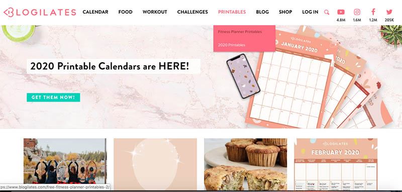
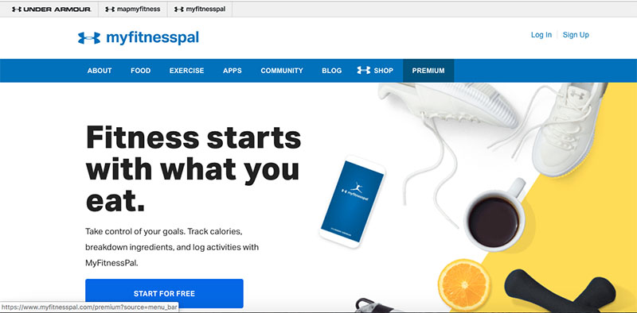

Project One: Blogilates by Cassey Ho
Blogilates is a website in which creator Cassey Ho, a pilates instructor who accumulated a following on youtube, shares her fitness guide, providing workout plans, how-to videos, healthy food recipes, personal blog posts, and an online store selling fitness gear. The website’s content and user interactions are presented effectively.
There are multiple sections in which the website collects information from the user, and are very easy to use. Some of these forms are simple; a user enters an email address to receive newsletters or enters a food-related word to search for recipes and the input box remains in the same spot on the website. Other forms require more focus. For example, clicking on the log in takes the user to a new page, where only the form to log in to an account is displayed. Another example is the website search tab that doesn’t take the user to a new page, but rather comes into screen from the bottom up, covering the whole page but is slightly transparent so the page behind it is still visible. Either complex or simple, the forms are still well-designed.
The limitation and presentation of content is strategically chosen and well organized. Most of the content on the homepage is presented with a thumbnail, a title, a date, and a small snippet of text followed by “...” encouraging the user to click on the thumbnail in order to read more. Clicking on the thumbnail takes the user to a seperate page where all of the information is, such as more photos and the entire article.
The website offers plenty of choices providing the user with a lot of freedom to look through the website. The navigation, for instance, consists of different categories the user can choose from depending on their subject of interest; he categories include workout calendar, food, challenges, blog, and shop. When scrolling down the homepage, there’s recently posted, specific workouts, recipes, blog posts, videos to choose from as well. The action desired most by the website is placed front and center on the home page, in this case its printing out 2020 calendars.
A user would know when and how to interact with the website, because its clues to functionality are evident. The color of the text in the navigation not only changes color, but also reveals a drop down menu, the text of which also changes color hovered over by the cursor, indicating clicking the text will take the reader to a new page. Other clues include the buttons provided changing color, the text of article titles both changing color and scaling up, and thumbnails zooming in when all are hovered over by the cursor.

Project Two: MyFitnessPal by Under Armour
MyFitnessPal, originally only an app, is a personal fitness tracker, that records one’s physical activities, calories imbibed and burned, and breaks down ingredients in foods. Not as complex as Blogilates’s website but still successfully executed, MyFitnessPal’s website is just as easy to use.
The forms that collect a user’s information are simple, and perform almost the same tasks as those included in blogilates. Clicking on “login” takes the user to a different page, where the only thing the user can do is enter their login information. Most input boxes are both labeled and contain the label, which disappears as soon as the user begins typing. There is also a page where a user can input information for the computer to calculate the amount of calories they burned. Although seeming like a difficult form, the input is easy for the user to enter.
Regarding content, the website is concise and direct. Most content, whether its text of description, explanation or inspiration, is displayed in small blocked paragraphs and given all at once, so the user does not have to click on a link that takes them to the rest of an article. Any content that presents more information, such as recipes, appears as a thumbnail along with a title, that when clicked on, takes you to a completely new website, which is the Under Armour blog. One interaction this website features that Blogilates does not is a slideshow under the Victory Stories section on the homepage. Instead of filling the homepage with all of the inspiration stories at the same time, the slideshow allows for a clean screen as only one story is shown at a time.
Users are given the most options to choose from and explore throughout the website independently through the navigation, where they can either go to the food page, the exercise page, the community page, and more. The homepage provides only one other section the user can make a choice, and it is found towards the bottom where a list of three recipe and inspiration blog posts are given. Similar to Blogilates, MyFitnessPal’s homepage first and foremost presents its most desired action from the user, which is starting an account with the tracker.
Users are guided through the website’s interactivity in a simple manner. When the cursor hovers over a button, the color of the button changes; it darkens. When the cursor hovers over a text, that when clicked on links to another page, changes color from blue to orange. Both clues are simple, but they are effective, because it tells the reader that there is some way they can interact with the site.
Final Comparison
Overall both websites are designed well, in that it is easy for the user to input information, the user is aware of all of the choices they have in navigating through the sites, the content of the websites is well organized and orderly, and the user knows when they can interact with the site. Blogilates to me, however, provides a more pleasurable experience in that there are more options to choose from, the actual design of the website, such as color schemes and typefaces, is more developed, and there is more user interactivity.